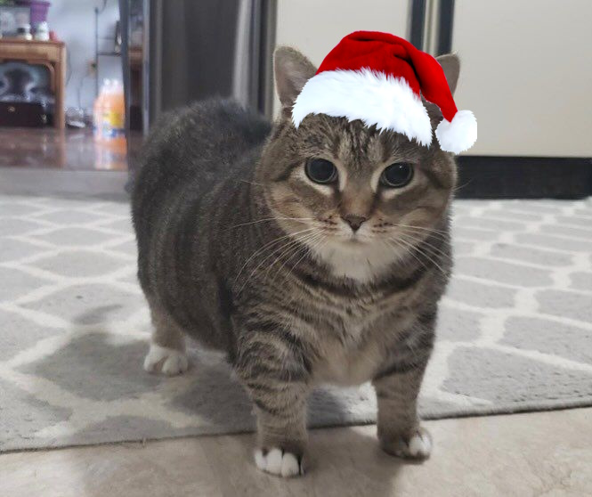
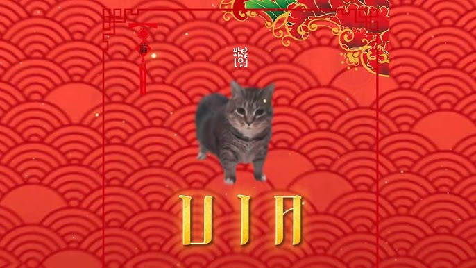
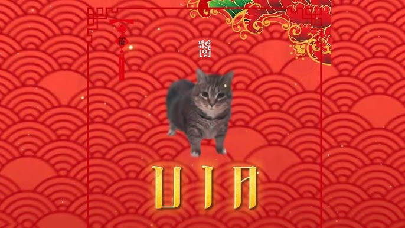
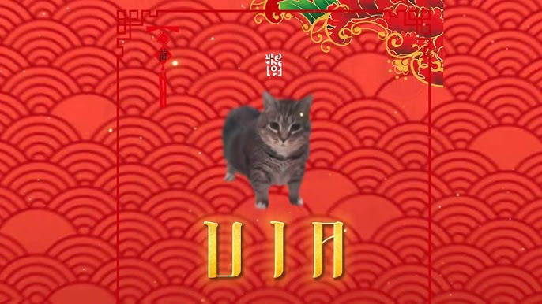

Introduce
Who is she?
The "UIA Cat," also known as the "OIIA Cat" or "Oo Ee A E A Cat," is a viral internet meme featuring a spinning gray tabby cat named Ethel. This meme gained popularity through its association with a catchy, nonsensical vocalization resembling "oo ee ah ee ah," often set to various remixed songs.
🐱 Origins of the UIA Cat Ethel's Introduction: Ethel is a rescue cat whose image was first shared in January 2019 on the Facebook group "Cats On Catnip Group." Her distinctive appearance, characterized by stubby legs and a stocky build, caught the attention of meme creators, particularly in Latin America, where she was affectionately dubbed "Ai Dise Gratis." Know Your Meme Early Meme Appearances: Ethel featured prominently in various meme formats, including the "I Wake Up, There's Another X" meme, where she was placed at the center of a circular diagram template that gained traction on Instagram in 2022.
The "UIA Cat," also known as the "OIIA Cat" or "Oo Ee A E A Cat," is a viral internet meme featuring a spinning gray tabby cat named Ethel. This meme gained popularity through its association with a catchy, nonsensical vocalization resembling "oo ee ah ee ah," often set to various remixed songs.
🐱 Origins of the UIA Cat Ethel's Introduction: Ethel is a rescue cat whose image was first shared in January 2019 on the Facebook group "Cats On Catnip Group." Her distinctive appearance, characterized by stubby legs and a stocky build, caught the attention of meme creators, particularly in Latin America, where she was affectionately dubbed "Ai Dise Gratis." Know Your Meme Early Meme Appearances: Ethel featured prominently in various meme formats, including the "I Wake Up, There's Another X" meme, where she was placed at the center of a circular diagram template that gained traction on Instagram in 2022.
You can know more about this cat by this link: UIA Cat
Gallery

 


Achievement of UIA cat
U
I
I
A
A